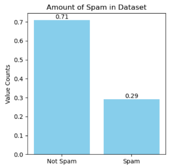
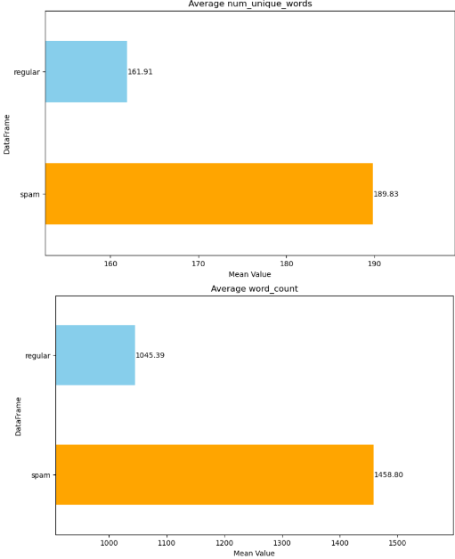
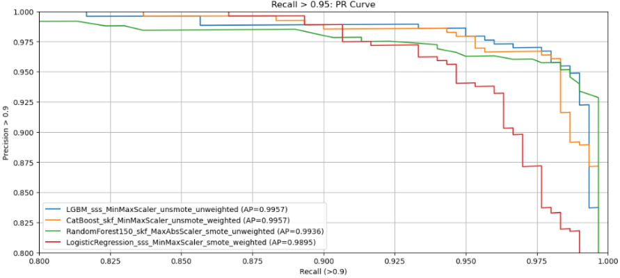
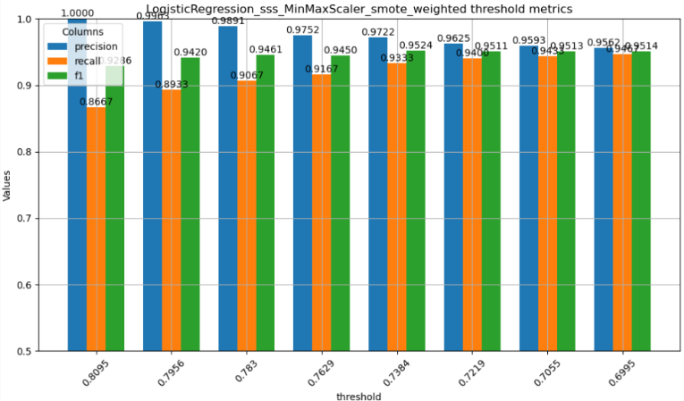

Email Class Imbalance: Spam vs HAM

EDA: word counts/unique word counts

SMOTE vs. Not Smote

Class Weights: 54/46 Weight Achivement
Studies show 46% of emails are spam. In order to achieve this class balance, weights should be

ROC-AUC

Precision/Recall Thresholds

Best Relaxed Filter: Logistic Regression, StratifiedShuffleSplit, SMOTE, Class Weights

Precision/Recall Thresholds